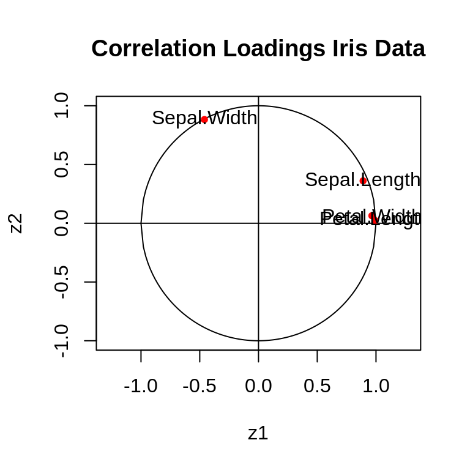

2 Transformations and dimension reduction
Motivation: In the following we study transformations of random vectors and their distributions. These transformation are very important since they either transform simple distributions into more complex distributions or allow to simplify complex models. In machine learning invertible mappings of transformations for probability distributions are known as “normalising flows” (these play a key role e.g. in neural networks).
2.1 Linear Transformations
2.1.1 Location-scale transformation
Also known as affine transformation.
\[\boldsymbol y= \underbrace{\boldsymbol a}_{\text{location parameter}}+\underbrace{\boldsymbol B}_{\text{scale parameter}} \boldsymbol x\space\] \[\boldsymbol y: m \times 1 \text{ random vector}\] \[\boldsymbol a: m \times 1 \text{ vector, location parameter}\] \[\boldsymbol B: m \times d \text{ matrix, scale parameter }, m \geq 1\] \[\boldsymbol x: d \times 1 \text{ random vector}\]
\[\begin{align*} \begin{array}{ll} \text{E}(\boldsymbol x)=\boldsymbol \mu\\ \text{Var}(\boldsymbol x)=\boldsymbol \Sigma\\ \end{array} \Longrightarrow \begin{array}{ll} \text{E}(\boldsymbol y)=\boldsymbol a+ \boldsymbol B\boldsymbol \mu\\ \text{Var}(\boldsymbol y)= \boldsymbol B\boldsymbol \Sigma\boldsymbol B^T \\ \end{array} \end{align*}\]
Special cases/examples:
- Univariate case (\(d=1, m=1\))
- \(\text{E}(y)=a+b\mu\)
- \(\text{Var}(y)=b^2\sigma^2\)
- Sum of two random univariate variables
\(y = x_1 + x_2\), i.e. \(a=0\) and \(\boldsymbol B=(1,1)\)- \(\text{E}(x_1+x_2)=\mu_1+\mu_2\)
- \(\text{Var}(x_1+x_2) = (1,1)\begin{pmatrix} \sigma^2_1 & \sigma_{12}\\ \sigma_{21} & \sigma^2_2 \end{pmatrix} \begin{pmatrix} 1\\ 1 \end{pmatrix} = \sigma^2_1+\sigma^2_2+2\sigma_{12} = \text{Var}(x_1)+\text{Var}(x_2)+2\text{Cov}(x_1,x_2)\)
- \(\text{E}(x_1+x_2)=\mu_1+\mu_2\)
- \(y_1=a_1+b_1 x_1\) and \(y_2=a_2+b_2 x_2\), i.e. \(\boldsymbol a= \begin{pmatrix} a_1\\ a_2 \end{pmatrix}\) and \(\boldsymbol B= \begin{pmatrix}b_1 & 0\\ 0 & b_2\end{pmatrix}\)
- \(\text{E}(\boldsymbol y)=\begin{pmatrix} a_1+b_1 \mu_1\\ a_2+b_2 \mu_2 \end{pmatrix}\)
- \(\text{Var}(\boldsymbol y) = \begin{pmatrix} b_1 & 0\\ 0 & b_2 \end{pmatrix} \begin{pmatrix} \sigma^2_1 & \sigma_{12}\\ \sigma_{21} & \sigma^2_2 \end{pmatrix} \begin{pmatrix} b_1 & 0\\ 0 & b_2 \end{pmatrix} = \begin{pmatrix} b^2_1\sigma^2_1 & b_1b_2\sigma_{12}\\ b_1b_2\sigma_{21} & b^2_2\sigma^2_2 \end{pmatrix}\)
i.e. \(\text{Cov}(a_1+b_1 x_1,a_2+b_2 x_2) = b_1 b_2\text{Cov}(x_1,x_2)\)
- \(\text{E}(\boldsymbol y)=\begin{pmatrix} a_1+b_1 \mu_1\\ a_2+b_2 \mu_2 \end{pmatrix}\)
2.1.2 Invertible location-scale transformation
If \(m=d\) and \(\det(\boldsymbol B) \neq 0\) then we get an invertible transformation: \[\boldsymbol y= \boldsymbol a+ \boldsymbol B\boldsymbol x\] \[\boldsymbol x= \boldsymbol B^{-1}(\boldsymbol y-\boldsymbol a)\]
Transformation of density: \(\boldsymbol x\sim F_{\boldsymbol x}\) with density \(f_{\boldsymbol x}(\boldsymbol x)\)
\(\Longrightarrow\) \(\boldsymbol y\sim F_{\boldsymbol y}\) with density \[ f_{\boldsymbol y}(\boldsymbol y)=|\det(\boldsymbol B)|^{-1} f_{\boldsymbol x} \left( \boldsymbol B^{-1}(\boldsymbol y-\boldsymbol a)\right)\]
\[\boldsymbol a=\boldsymbol \mu\] \[\boldsymbol B=\boldsymbol \Sigma^{1/2}\] where \(\boldsymbol \Sigma^{1/2} = \boldsymbol U\boldsymbol \Lambda^{1/2} \boldsymbol U^T\) is the principal matrix square root obtained by eigenvalue decomposition of \(\boldsymbol \Sigma= \boldsymbol U\boldsymbol \Lambda\boldsymbol U^T\). Note that \(\boldsymbol \Sigma^{1/2}\) is unique, symmetric, and positive definite (not just positive semi-definite because this is an invertible transformation).
\[\text{E}(\boldsymbol x)=\boldsymbol 0\text{ and } \text{Var}(\boldsymbol x)=\boldsymbol I_d\] \[\Longrightarrow\text{E}(\boldsymbol y) = \boldsymbol \mu\text{ and } \text{Var}(\boldsymbol y) = \boldsymbol \Sigma\] Assume \(\boldsymbol x\) is multivariate standard normal \(\boldsymbol x\sim N_d(\boldsymbol 0,\boldsymbol I_d)\) with density \[f_{\boldsymbol x}(\boldsymbol x) = (2\pi)^{-d/2}\exp\left( -\frac{1}{2} \boldsymbol x^T \boldsymbol x\right)\] Then the density after applying this coloring transform is
\[f_{\boldsymbol y}(\boldsymbol y) = |\det(\boldsymbol \Sigma^{1/2})|^{-1} (2\pi)^{-d/2} \exp\left(-\frac{1}{2}(\boldsymbol y-\boldsymbol \mu)^T\boldsymbol \Sigma^{-1/2} \,\boldsymbol \Sigma^{-1/2}(\boldsymbol y-\boldsymbol \mu)\right)\]
\[= (2\pi)^{-d/2} \det(\boldsymbol \Sigma)^{-1/2} \exp\left(-\frac{1}{2}(\boldsymbol y-\boldsymbol \mu)^T\boldsymbol \Sigma^{-1}(\boldsymbol y-\boldsymbol \mu)\right)\] \(\Longrightarrow\) \(\boldsymbol y\) has multivariate normal density!!
Application: e.g. random number generation: draw from \(N_d(\boldsymbol 0,\boldsymbol I_d)\) (easy!) then convert to multivariate normal by coloring transformation \(\boldsymbol x\rightarrow \boldsymbol y\)
This is the inverse of the above coloring transformation
\[\boldsymbol a= - \boldsymbol \Sigma^{-1/2} \boldsymbol \mu\] \[\boldsymbol B= \boldsymbol \Sigma^{-1/2}\] \[\text{E}(\boldsymbol x)=\boldsymbol \mu\text{ and } \text{Var}(\boldsymbol x)=\boldsymbol \Sigma\] \[\Longrightarrow\text{E}(\boldsymbol y) = \boldsymbol 0\text{ and } \text{Var}(\boldsymbol y) = \boldsymbol I_d\] Mahalanobis transformation performs three functions:
- Centering (\(-\boldsymbol \mu\))
- Standardisation \(\text{Var}(y_i)=1\)
- Decorrelation \(\text{Cor}(y_i,y_j)=0\) for \(i \neq j\)
Univariate case (\(d=1\))
\[y = \frac{x-\mu}{\sigma}\] As there is no correlation for \(d=1\), it’s standardisation + centering.
Mahalanobis transformation appears implicitly in many places in multivariate statistics, e.g. in the multivariate normal density.
2.2 Nonlinear transformations
2.2.1 General transformation
\[\boldsymbol y= \boldsymbol h(\boldsymbol x)\] with \(\boldsymbol h\) an arbitrary vector-valued function
- linear case: \(\boldsymbol h(\boldsymbol x) = \boldsymbol a+\boldsymbol B\boldsymbol x\)
\[\begin{align*} \begin{array}{ll} \text{E}(\boldsymbol y)=? \\ \text{Var}(\boldsymbol y)=? \\ \end{array} \end{align*}\]
For a general transformation \(\boldsymbol h(\boldsymbol x)\) the mean and variance of the transformed variable cannot be easily or analytically calculated.
However, we can find a linear approximation and then compute the mean and variance. This is called the “Delta Method”.
2.2.2 Linearisation of \(\boldsymbol h(\boldsymbol x)\)
Taylor series approximation (first order) of \(\boldsymbol h(\boldsymbol x\) around \(\boldsymbol \mu\): \[\boldsymbol h(\boldsymbol x) \approx \boldsymbol h(\boldsymbol \mu) + \underbrace{\boldsymbol J_{\boldsymbol h}(\boldsymbol \mu)}_{\text{Jacobi matrix}}(\boldsymbol x-\boldsymbol \mu)\]
\(\nabla\), the nabla operator, is the row vector \((\frac{\partial}{\partial x_1},...,\frac{\partial}{\partial x_d})\), which when applied to univariate \(h\) gives the gradient:
\[\nabla h(\boldsymbol x) = \left(\frac{\partial h}{\partial x_1},...,\frac{\partial h}{\partial x_d}\right)\]
The Jacobi matrix is the generalisation of gradient if \(\boldsymbol h\) is vector-valued:
\[\boldsymbol J_{\boldsymbol h}(\boldsymbol x) = \begin{pmatrix}\nabla h_1(\boldsymbol x)\\ \nabla h_2(\boldsymbol x) \\ \vdots \\ \nabla h_m(\boldsymbol x) \end{pmatrix} = \begin{pmatrix} \frac{\partial h_1}{\partial x_1} & \dots & \frac{\partial h_1}{\partial x_d}\\ \vdots & \ddots & \vdots \\ \frac{\partial h_m}{\partial x_1} & \dots & \frac{\partial h_m}{\partial x_d} \end{pmatrix}\]
2.2.3 Delta method
\[\boldsymbol y= \boldsymbol h(\boldsymbol x) \approx \boldsymbol a+ \boldsymbol B\boldsymbol x\] with \(\boldsymbol a= \boldsymbol h(\boldsymbol \mu) -\boldsymbol \mu\boldsymbol J_{\boldsymbol h}(\boldsymbol \mu)\) and \(\boldsymbol B= \boldsymbol J_{\boldsymbol h}(\boldsymbol \mu)\)
\(\Longrightarrow\) \[\text{E}(\boldsymbol y)\approx\boldsymbol h(\boldsymbol \mu)\] \[\text{Var}(\boldsymbol y)\approx \boldsymbol J_{\boldsymbol h}(\boldsymbol \mu) \, \boldsymbol \Sigma\, \boldsymbol J_{\boldsymbol h}(\boldsymbol \mu)^T\] Special case: univariate Delta method \[\text{E}(y)= h(\mu)\] \[\text{Var}(y)= \sigma^2 h'(\mu)^2\]
2.2.4 Transformation of densities under general invertible transformation
Assume \(\boldsymbol h(\boldsymbol x) = \boldsymbol y(\boldsymbol x)\) is invertible: \(\boldsymbol h^{-1}(\boldsymbol y)=\boldsymbol x(\boldsymbol y)\)
\(\boldsymbol x\sim F_{\boldsymbol x}\) with probability density function \(f_{\boldsymbol x}(\boldsymbol x)\)
The density \(f_{\boldsymbol y}(\boldsymbol y)\) of the transformed random vector \(\boldsymbol y\) is then given by
\[f_{\boldsymbol y}(\boldsymbol y) = |\det\left( \boldsymbol J_{\boldsymbol x}(\boldsymbol y) \right)| \,\,\, f_{\boldsymbol x}\left( \boldsymbol x(\boldsymbol y) \right)\]
where \(\boldsymbol J_{\boldsymbol x}(\boldsymbol y)\) is the Jacobi matrix of the inverse transformation
Special cases:
- Univariate version: \(f_y(y) = |\frac{dx}{dy}| \, f_x\left(x(y)\right)\)
- Linear transformation \(\boldsymbol h(\boldsymbol x) = \boldsymbol a+ \boldsymbol B\boldsymbol x\), with \(\boldsymbol x(\boldsymbol y) = \boldsymbol B^{-1}(\boldsymbol y-\boldsymbol a)\)
and \(\boldsymbol J_{\boldsymbol x}(\boldsymbol y) = \boldsymbol B^{-1}\):
\(f_{\boldsymbol y}(\boldsymbol y)=|\det(\boldsymbol B)|^{-1} f_{\boldsymbol x} \left( \boldsymbol B^{-1}(\boldsymbol y-\boldsymbol a)\right)\)
2.2.5 Normalising flows
In machine learning (sequences of) invertible nonlinear transformations are known as “normalising flows”. They are used both in a generative way (building complex models from simple models) and also in a simplification and dimension reduction context.
In this module we will focus mostly on linear transformations as these underpin much of classical multivariate statistics, but it is important to keep in mind for later study the importance of nonlinear transformations —see, e.g, the review paper by Kobyzev et al. “Normalizing Flows: Introduction and Ideas”, available from https://arxiv.org/abs/1908.09257 .
2.3 Whitening transformations
2.3.1 Overview
The Mahalanobis transform (also know as ZCA transform in machine learning) is a specific example of a whitening transformation. These constitute an important and widely used class of invertible location-scale transformations.
Terminology: whitening refers to the fact that after the transformation the covariance matrix is spherical, isotrop, white (\(\boldsymbol I_d\))
Whitening is useful in preprocessing, to turn multivariate problems into simple univariate models and some reduce the dimension in an optimal way.
In so-called latent variable models whitening procedures link observed and latent variables (which usually are uncorrelated and standardised random variables):
\[\begin{align*} \begin{array}{cl} \text{Whitening} \\ \downarrow \end{array} \begin{array}{ll} \boldsymbol x\\ \uparrow \\ \boldsymbol z\\ \end{array} \begin{array}{ll} \text{Observed external variable (can be measured), typically correlated} \\ \space \\ \text{Unobserved "latent" variable internal, typically not correlated} \\ \end{array} \end{align*}\]
2.3.2 General whitening transformation
\[\boldsymbol x\text{ random vector} \sim F_{\boldsymbol x} \text{ (not necessarily from multivariate normal)}\]
\[\underbrace{\boldsymbol z}_{d \times 1 \text{ vector }} = \underbrace{\boldsymbol W}_{d \times d \text{ whitening matrix }} \underbrace{\boldsymbol x}_{d \times 1 \text{ vector }}\] Objective: choose \(\boldsymbol W\) so that \(\text{Var}(\boldsymbol z)=\boldsymbol I_d\)
Note: we do not care about \(\text{E}(\boldsymbol z)\) since we can always centre!
For Mahalanobis/ZCA whitening we already know that \(\boldsymbol W^{\text{ZCA}}=\boldsymbol \Sigma^{-1/2}\).
In general, \(\boldsymbol W\) needs to satisfy a constraint: \[ \begin{array}{lll} & \text{Var}(\boldsymbol z) & = \boldsymbol I_d \\ \Longrightarrow & \text{Var}(\boldsymbol W\boldsymbol x) &= \boldsymbol W\boldsymbol \Sigma\boldsymbol W^T = \boldsymbol I_d \\ \Longrightarrow & \boldsymbol W\, \boldsymbol \Sigma\, \boldsymbol W^T \boldsymbol W= \boldsymbol W& \\ \end{array} \] \[\Longrightarrow \text{constraint on whitening matrix: } \boldsymbol W^T \boldsymbol W= \boldsymbol \Sigma^{-1}\]
Clearly, the ZCA whitening matrix satisfies this constraint: \((\boldsymbol W^{ZCA})^T \boldsymbol W^{ZCA} = \boldsymbol \Sigma^{-1/2}\boldsymbol \Sigma^{-1/2}=\boldsymbol \Sigma^{-1}\)
2.3.3 General solution of whitening constraint (covariance-based)
\[\boldsymbol W= \boldsymbol Q_1 \boldsymbol \Sigma^{-1/2}\]
where \(\boldsymbol Q_1\) is a rotation (orthogonal) matrix (with properties \(\boldsymbol Q^T \boldsymbol Q= \boldsymbol Q\boldsymbol Q^T = \boldsymbol I\) and \(\boldsymbol Q^T = \boldsymbol Q^{-1}\)).
Easy to see that this \(\boldsymbol W\) satisfies the whitening constraint:
\[\boldsymbol W^T \boldsymbol W= \boldsymbol \Sigma^{-1/2}\underbrace{\boldsymbol Q_1^T \boldsymbol Q_1}_{\boldsymbol I}\boldsymbol \Sigma^{-1/2}=\boldsymbol \Sigma^{-1}\]
\(\Longrightarrow\) instead of choosing \(\boldsymbol W\), we choose the rotation matrix \(\boldsymbol Q_1\)!
- it is now clear that there are infinitely many whitening procedures, because there are infinitely many rotations! This also means we need to find ways to choose/select among whitening procedures.
- for the Mahalanobis/ZCA transformation \(\boldsymbol Q_1^{\text{ZCA}}=\boldsymbol I\)
- whitening can be interpreted as Mahalanobis transform followed by rotation
2.3.4 Another solution (correlation-based)
Instead of working with \(\boldsymbol \Sigma\), we can express \(\boldsymbol W\) also in terms of correlation matrix \(\boldsymbol P= (\rho_{ij})\). \[\boldsymbol W= \boldsymbol Q_2 \boldsymbol P^{-1/2} \boldsymbol V^{-1/2}\] where \(\boldsymbol V^{1/2}\) is the diagonal matrix containing the variances.
It is easy to verify that this \(\boldsymbol W\) also satisfies the whitening constraint: \[ \begin{array}{ll} \boldsymbol W^T \boldsymbol W& = \boldsymbol V^{-1/2}\boldsymbol P^{-1/2}\underbrace{\boldsymbol Q_2^T \boldsymbol Q_2}_{\boldsymbol I}\boldsymbol P^{-1/2} \boldsymbol V^{-1/2} \\ & = \boldsymbol V^{-1/2} \boldsymbol P^{-1} \boldsymbol V^{-1/2} = \boldsymbol \Sigma^{-1} \\ \end{array} \]
- for Mahalanobis/ZCA transformation \(\boldsymbol Q_2^{\text{ZCA}} = \boldsymbol \Sigma^{-1/2} \boldsymbol V^{1/2} \boldsymbol P^{1/2}\)
- Another interpretation of whitening: first standardising (\(\boldsymbol V^{-1/2}\)), then decorrelation (\(\boldsymbol P^{-1/2}\)), followed by rotation (\(\boldsymbol Q_2\))
Both forms to write \(\boldsymbol W\) are equally valid (and interchangeable).
Note that for the same \(\boldsymbol W\)
\[\boldsymbol Q_1\neq\boldsymbol Q_2 \text{ Two different rotation matrices!}\]
and also
\[\underbrace{\boldsymbol \Sigma^{-1/2}}_{\text{Symmetric}}\neq\underbrace{\boldsymbol P^{-1/2}\boldsymbol V^{-1/2}}_{\text{Not Symmetric}}\]
even though
\[\boldsymbol \Sigma^{-1/2}\boldsymbol \Sigma^{-1/2}=\boldsymbol \Sigma^{-1} = \boldsymbol V^{-1/2}\boldsymbol P^{-1/2}\boldsymbol P^{-1/2}\boldsymbol V^{-1/2}\]
2.3.5 Objective criteria for choosing among \(\boldsymbol W\) using \(\boldsymbol Q_1\) or \(\boldsymbol Q_2\)
- Cross-covariance \(\boldsymbol \Phi= \Sigma_{\boldsymbol z,\boldsymbol x}\) between \(\boldsymbol z\) and \(\boldsymbol x\)
\[ \begin{array}{ll} \boldsymbol \Phi= \text{Cov}(\boldsymbol z,\boldsymbol x) & = \text{Cov}(\boldsymbol W\boldsymbol x,\boldsymbol x) = \boldsymbol W\boldsymbol \Sigma\\ &= \boldsymbol Q_1 \boldsymbol \Sigma^{-1/2} \boldsymbol \Sigma= \boldsymbol Q_1\boldsymbol \Sigma^{1/2} \end{array} \]
- Cross-covariance linked with \(\boldsymbol Q_1\)!
- Choosing suitable cross-covariance allows the selection of a “good” \(\boldsymbol Q_1\) (and hence \(\boldsymbol W\))
- Cross-correlation \(\boldsymbol \Psi= \boldsymbol P_{\boldsymbol z,\boldsymbol x}\) between \(\boldsymbol z\) and \(\boldsymbol x\)
\[ \begin{array}{ll} \boldsymbol \Psi= \text{Cor}(\boldsymbol z,\boldsymbol x) & = \boldsymbol \Phi\boldsymbol V^{-1/2} = \boldsymbol W\boldsymbol \Sigma\boldsymbol V^{-1/2}\\ &=\boldsymbol Q_2 \boldsymbol P^{-1/2} \boldsymbol V^{-1/2} \boldsymbol \Sigma\boldsymbol V^{-1/2} = \boldsymbol Q_2\boldsymbol P^{1/2} \end{array} \]
- Cross-correlation linked with \(\boldsymbol Q_2\)!
- Choosing suitable cross-correlation allows the selection of a “good” \(\boldsymbol Q_2\) (and hence \(\boldsymbol W\))
Properties: \[\boldsymbol \Psi= (\psi_{ij})\] \[\boldsymbol \Psi^T \boldsymbol \Psi= \boldsymbol P\] \(\Longrightarrow \text{Diag}(\boldsymbol \Psi^T \boldsymbol \Psi) = (1,1, \ldots, 1)\) and \(\text{Tr}(\boldsymbol \Psi^T \boldsymbol \Psi)=d\)
\[\Longrightarrow \sum_{i=1}^d \psi_{ij}^2 = 1\] i.e. the column sums of \(\psi_{ij}^2\) are equal to 1.
Interpretation: this is the quared multiple correlation coefficient \(R^2=1\) between \(z_1, ..., z_d\) and \(x_j\)!
(as the \(z_i\) are all uncorrelated you can simply sum the squared correlations to get \(R^2\); it is equal to 1 because whitening is an invertible transformation)
The \(R^2\)-s going from \(x_1, \ldots, x_d\) to the \(z_i\) also equal 1, but because the \(x_i\) are correlated they need to be computed as \(\text{Diag}(\boldsymbol \Psi\boldsymbol P^{-1} \boldsymbol \Psi^T) = \text{Diag}(\boldsymbol P_{\boldsymbol z,\boldsymbol x} \boldsymbol P^{-1} \boldsymbol P_{\boldsymbol x,\boldsymbol z}) = (1,1, \ldots, 1)\).
2.4 Natural whitening procedures
Now we discuss several strategies (maximise correlation between individual components, maximise compression, etc.) to arrive at optimal whitening transformation.
This leads to the following “natural” whitening transformations:
- Mahalanobis whitening (also known as ZCA whitening in machine learning)
- ZCA-cor whitening
- Cholesky whitening
- PCA whitening
- PCA-cor whitening
- CCA whitening (Canonical Correlation Analysis)
In the following \(\boldsymbol x_c = \boldsymbol x-\boldsymbol \mu_{\boldsymbol x}\) and \(\boldsymbol z_c = \boldsymbol z-\boldsymbol \mu_{\boldsymbol z}\) denote the mean-centered variables.
2.4.1 ZCA Whitening
Aim: remove correlations but otherwise keep \(\boldsymbol z\) as similar as possible to \(\boldsymbol x\) (componentwise!)
\[ \begin{array}{cc} z_1\leftrightarrow x_1 \\ z_2\leftrightarrow x_2\\ z_3\leftrightarrow x_3 \\ \vdots \end{array} \]
Objective function: minimise \(\text{E}\left((\boldsymbol z_c-\boldsymbol x_c)^T(\boldsymbol z_c-\boldsymbol x_c)\right) = d - 2\text{Tr}(\boldsymbol \Phi)+\text{Tr}(\boldsymbol V)\)
Equivalent objective: maximise \(\text{Tr}(\boldsymbol \Phi) = \text{Tr}(\boldsymbol Q_1\boldsymbol \Sigma^{1/2})\) to find optimal \(\boldsymbol Q_1\)
Optinal solution:
\[\boldsymbol Q_1^{\text{ZCA}}=\boldsymbol I\]
\[\Longrightarrow \boldsymbol W^{\text{ZCA}} = \boldsymbol \Sigma^{-1/2}\]
- ZCA/Mahalanobis transform is the unique transformation that minimises the expected squared component-wise difference between \(\boldsymbol x\) and \(\boldsymbol z\).
- Use ZCA and Mahalanobis whitening if you want to “just” remove correlations.
2.4.2 ZCA-Cor Whitening
Aim: same as above but remove scale in \(\boldsymbol x\) first before comparing to \(\boldsymbol z\)
Objective function: minimise \(\text{E}\left((\boldsymbol z_c-\boldsymbol V^{-1/2}\boldsymbol x_c)^T(\boldsymbol z_c-\boldsymbol V^{-1/2}\boldsymbol x_c)\right) = 2d - 2\text{Tr}(\boldsymbol \Psi)\)
Equivalent objective: maximise \(\text{Tr}(\boldsymbol \Psi)=\text{Tr}(\boldsymbol Q_2\boldsymbol P^{1/2})\) to find optimal \(\boldsymbol Q_2\)
Optimal solution: \[\boldsymbol Q_2^{\text{ZCA-Cor}}=\boldsymbol I\]
\[\Longrightarrow \boldsymbol W^{\text{ZCA-Cor}} = \boldsymbol P^{-1/2}\boldsymbol V^{-1/2}\]
- ZCA-cor whitening is the unique whitening transformation if you aim to maximise correlation between corresponding components in \(\boldsymbol x\) and \(\boldsymbol z\).
- Only if \(\boldsymbol x\) is standardised to \(\text{Var}(x_i)=1\) then ZCA and ZCA-cor are identical
- ZCA and ZCA-cor: lead to interpretable \(\boldsymbol z\)
2.4.3 Cholesky Whitening
Aim: find a whitening transformation such that the cross-covariance and cross-correlation have triangular structure. This is useful in some models (such as time course data) to ensure that the future cannot influence the past.
Solution: Cholesky decomposition of \(\boldsymbol \Sigma^{-1} = \boldsymbol L\boldsymbol L^T\)
\(\boldsymbol L\) is a lower triangular matrix with positive diagonal elements
\(\Longrightarrow \boldsymbol W^{\text{Chol}}=\boldsymbol L^T\)
By construction, \(\boldsymbol W^{\text{Chol}}\) satisfies the whitening constraint since \((\boldsymbol W^{\text{Chol}})^T\boldsymbol W^{\text{Chol}} = \boldsymbol \Sigma^{-1}\).
The corresponding rotation matrices are \(\boldsymbol Q_1^{\text{Chol}} = \boldsymbol L^T \boldsymbol \Sigma^{1/2}\) and \(\boldsymbol Q_2^{\text{Chol}} = \boldsymbol L^T \boldsymbol V^{1/2} \boldsymbol P^{1/2}\)
which results in \(\boldsymbol \Phi^{\text{Chol}} = \boldsymbol L^T\boldsymbol \Sigma\) and \(\boldsymbol \Psi^{\text{Chol}} = \boldsymbol L^T \boldsymbol \Sigma\boldsymbol V^{-1/2}\)
2.4.4 PCA Whitening
Aim: remove correlations and compress information in \(\boldsymbol x\) (each component \(z_i\)
maximally linked with all variables in \(\boldsymbol x\)):
\[
\begin{array}{ccccccc}
z_1 & \leftarrow x_1 & & z_2 & \leftarrow x_1 && \ldots \\
z_1 & \leftarrow x_2 & & z_2 & \leftarrow x_2 \\
\vdots\\
z_1 & \leftarrow x_d & & z_2 & \leftarrow x_d \\
\end{array}
\]
Objective: maximise \(\sum^d_{j=1}\text{Cov}(z_i,x_j)^2 = \sum^d_{j=1} \phi_{ij}^2\) for all \(i\)
Equivalent objective: maximise \((\phi_1,...,\phi_d)^T=\text{Diag}(\boldsymbol \Phi\boldsymbol \Phi^T)=\text{Diag}(\boldsymbol Q_1\boldsymbol \Sigma\boldsymbol Q_1^T)\), with \(\phi_1>\phi_2>\dots >\phi_d\)
Optimal solution: \[\boldsymbol Q_1^{\text{PCA}}=\boldsymbol U^T\] \[\Longrightarrow \boldsymbol W^{\text{PCA}} = \boldsymbol U^T\boldsymbol \Sigma^{-1/2}=\boldsymbol \Lambda^{-1/2}\boldsymbol U^T\]
- Optimum value: \(\text{Diag}(\boldsymbol Q_1^{\text{PCA}}\boldsymbol \Sigma(\boldsymbol Q_1^{\text{PCA}})^T) = \text{Diag}(\boldsymbol \Lambda)=(\lambda_1, \ldots ,\lambda_d)^T\)
- PCA whitening is the unique whitening transformation that maximises compression with the sum of squared cross-covariances as underlying optimality criteron
- One may use \(\frac{\lambda_i}{\sum^d_{j=1}\lambda_j}\) as measure of “proportion of explained variation” for each component in \(\boldsymbol z\)
\(\rightarrow\) scree plots - This allows the reduction of dimension by discarding low ranking components in \(\boldsymbol z\) that do not carry much information
2.4.5 PCA-cor Whitening
Aim: as for PCA whitening but remove scale in \(\boldsymbol x\) first (i.e. use squared correlations rather squared covariances to measure compression)
Objective: maximise \(\sum^d_{j=1}\text{Cor}(z_i, x_j)^2 = \sum^d_{i=1} \psi_{ij}^2\) for all \(i\)
Equivalent objective: maximise \((\psi_1,...,\psi_d)^T=\text{Diag}(\boldsymbol \Psi\boldsymbol \Psi^T)=\text{Diag}(\boldsymbol Q_2\boldsymbol P\boldsymbol Q_2^T)\)
with \(\psi_1>\psi_2>\dots >\psi_d\).
Optimal solution: \[\boldsymbol Q_2^{\text{PCA-Cor}}=\boldsymbol G^T\]
(with eigendecomposition of \(\boldsymbol P= \boldsymbol G\boldsymbol \Theta\boldsymbol G^T\))
\[\Longrightarrow \boldsymbol W^{\text{PCA-Cor}} = \boldsymbol \Theta^{-1/2} \boldsymbol G^T \boldsymbol V^{-1/2}\]
- Optimum value: \(\text{Diag}(\boldsymbol Q_2^{\text{PCA-Cor}}\boldsymbol P(\boldsymbol Q_2^{\text{PCA-Cor}})^T) = \text{Diag}(\boldsymbol \Theta) = (\theta_1, \ldots, \theta_d)^T\)
- PCA-cor whitening is the unique whitening procedure that maximises compression with the sum of squared cross-correlation as optimality criterion
- If \(\boldsymbol x\) is standardised to \(\text{Var}(x_i)=1\), then PCA and PCA-cor are identical.
- \(\frac{\theta_i}{\sum^d_{j=1} \theta_j} = \frac{\theta_j}{d}\) indicates relative importance of each whitened variable \(z_j\) to predict \(\boldsymbol x\)
(note that \(\sum_{j=1}^d \theta_j = \text{Tr}(\boldsymbol P) = d\)) - Useful for reduction of dimension by discarding low-ranking elements in \(\boldsymbol z\)
Criterion for relative contributions is linked to multivariate regression \(R^2\): \(\text{Tr}(\boldsymbol P_{yx}\boldsymbol P_{x}^{-1}\boldsymbol P_{xy})\) which for whitening transformations is \(d\) in both directions.
2.4.6 Comparison of ZCA, PCA and Chol whitening

In the above comparison you see ZCA, PCA and Cholesky whitening applied to a simulated bivariate normal data set with correlation \(\rho=0.8\) (column 1). All approaches equally succeed in whitening (column 2) but they differ in the cross-correlations. Columns 3 and 4 shows the cross-correlations between the first two pairs corresponding components for ZCA, PCA and Cholesky whitening. As expected, in ZCA both components show strong correlation, but this is not the case for PCA and Cholesky whitening.
2.4.7 Recap
| Method | Type of usage |
|---|---|
| ZCA, ZCA-cor: | pure decorrelate, maintain similarity to original data set, interpretability |
| PCA, PCA-cor: | compression, find effective dimension, reduce dimensionality, feature identification |
| Chol: | time course data |
Related models not discussed in this course:
Factor models: essentially whitening plus an additional error term, factors have rotational freedom just like in whitening
PLS: similar to PCA but in regression setting (with the choice of latent variables depending on the response)
2.5 Principal Component Analysis (PCA)
- Traditional PCA (invented 1901 by Pearson) is very closely related to PCA whitening.
- But PCA itself is not a whitening procedure!
PCA transformation: \[\underbrace{\boldsymbol t}_{\text{Principal Components}} = \underbrace{\boldsymbol U^T\boldsymbol x}_{\text{Orthogonal projection}}\] \[\Longrightarrow \text{Var}(\boldsymbol t) = \boldsymbol \Lambda= \begin{pmatrix} \lambda_1 & \dots & 0 \\ \vdots & \ddots & \vdots \\ 0 & \dots & \lambda_d\end{pmatrix}\]
- Principal components are orthogonal but do not have unit variance!
- The variances of the principal components are equal to the eigenvalues of \(\boldsymbol \Sigma\): \(\text{Var}(\boldsymbol t^{\text{PCA}}) = \boldsymbol \Lambda\).
- You arrive at PCA whitening by standardising the PCA components: \(\boldsymbol z^{\text{PCA}} = \boldsymbol \Lambda^{-1/2} \boldsymbol t^{\text{PCA}}\)
- Same compression / optimality properties as PCA whitening.
2.5.1 Application to data
Written in terms of a data matrix \(\boldsymbol X\) instead of a random vector \(\boldsymbol x\) PCA becomes: \[\underbrace{\boldsymbol T}_{\text{Sample version of principal components}}=\underbrace{\boldsymbol X}_{\text{Data matrix}}\boldsymbol U\] There are now two ways to obtain \(\boldsymbol U\):
Estimate the covariance matrix, e.g. by \(\hat{\boldsymbol \Sigma} = \frac{1}{n}\boldsymbol X_c^T\boldsymbol X_c\) where \(\boldsymbol X_c\) is the column-centred data matrix; then apply the eigenvalue decomposition on \(\hat{\boldsymbol \Sigma}\) to get \(\boldsymbol U\).
Compute the singular value decomposition of \(\boldsymbol X_c = \boldsymbol V\boldsymbol D\boldsymbol U^T\). As \(\hat{\boldsymbol \Sigma} = \frac{1}{n}\boldsymbol X_c^T\boldsymbol X= \boldsymbol U(\frac{1}{n}\boldsymbol D^2)\boldsymbol U^T\) you can just use \(\boldsymbol U\) from the SVD of \(\boldsymbol X_c\) and there is no need to compute the covariance.
2.6 PCA correlation loadings and plot
A useful quantity to evaluate the PCA whitened components \(\boldsymbol z^{\text{PCA}}\) and the related principle components \(\boldsymbol t^{\text{PCA}}\) is the cross-correlation matrix \(\boldsymbol \Psi\). Specifically, \(\boldsymbol \Psi= \text{Cor}(\boldsymbol z^{\text{PCA}}, \boldsymbol x) = \text{Cor}(\boldsymbol t^{\text{PCA}}, \boldsymbol x) = \boldsymbol \Lambda^{1/2} \boldsymbol U^T \boldsymbol V^{-1/2}\).
We now consider the back-transformation of the (standardised) PCA components to the standardised original components. The inverse PCA transformation is \(\boldsymbol x= \boldsymbol U\boldsymbol t^{\text{PCA}}\) (note that \(\boldsymbol U^{-1} = \boldsymbol U^T\)). If one standardises \(\boldsymbol x\) this equation becomes \(\boldsymbol V^{-1/2} \boldsymbol x= \boldsymbol V^{-1/2} \boldsymbol U\boldsymbol t^{\text{PCA}}\) and expressed in terms of the standardised \(\boldsymbol z^{\text{PCA}}\) it becomes \(\boldsymbol V^{-1/2} \boldsymbol x= ( \boldsymbol V^{-1/2} \boldsymbol U\boldsymbol \Lambda^{1/2}) \boldsymbol \Lambda^{-1/2} \boldsymbol t^{\text{PCA}}\) which is equivalent to \(\boldsymbol V^{-1/2} \boldsymbol x= \boldsymbol \Psi^T \boldsymbol z^{\text{PCA}}\). Thus the cross-correlation matrix \(\boldsymbol \Psi\) plays the role of the correlation loadings, i.e. the coefficients linking the (standardised) PCA components with the standardised original components.
Recall that in a linear regression model with uncorrelated predictors the (squared) correlations between each predictor and the response can be used as measure of variable importance. Since PCA (whitened) components are uncorrelated by construction, the correlation loadings \(\boldsymbol \Psi\) measure the capability of each principal component to predict the original variables.
For visualisation, a correlation loadings plot is often constructed as follows. The loadings \(\boldsymbol \Psi\) for the first two whitened PCA components \(z_1\), \(z_2\) (or equivalently for \(t_1, t_2\)) to all original variables are computed. Then a point for each orginal variable is drawn in a plane with the two correlation loadings acting as its coordinates. By construction, all points have to lie within a unit circle around the origin . The orginal variables most strongly influenced by the two latent variables will have strong correlation and thus lie near the outer circle, whereas variables that are not influenced by the two latent variables will lie near the origin. (see next section for an example).
2.6.1 Iris data example
A plot of the the first two components after PCA-whitening is applied reveals the group structure among iris flowers:

Here is the corresponding loadings plot:

2.7 CCA whitening (Canonical Correlation Analysis)
So far, we have looked only into whitening as a single vector \(\boldsymbol x\). In CCA whitening we consider two vectors \(\boldsymbol x\) and \(\boldsymbol y\) simultaneously:
\[\begin{align*} \begin{array}{ll} \boldsymbol x= \begin{pmatrix} x_1 \\ \vdots \\ x_p \end{pmatrix} \\ \text{Dimension } p \end{array} \begin{array}{ll} \boldsymbol y= \begin{pmatrix} y_1 \\ \vdots \\ y_q \end{pmatrix} \\ \text{Dimension } q \end{array} \begin{array}{ll} \text{Var}(\boldsymbol x) = \boldsymbol \Sigma_{\boldsymbol x} = \boldsymbol V_{\boldsymbol x}^{1/2}\boldsymbol P_{\boldsymbol x}\boldsymbol V_{\boldsymbol x}^{1/2} \\ \text{Var}(\boldsymbol y) = \boldsymbol \Sigma_{\boldsymbol y} = \boldsymbol V_{\boldsymbol y}^{1/2}\boldsymbol P_{\boldsymbol y}\boldsymbol V_{\boldsymbol y}^{1/2} \\ \end{array} \end{align*}\]
\[\begin{align*} \begin{array}{cc} \text{Whitening of } \boldsymbol x\text{:} \\ \text{Whitening of } \boldsymbol y\text{:} \end{array} \begin{array}{cc} \boldsymbol z_{\boldsymbol x} = \boldsymbol W_{\boldsymbol x}\boldsymbol x=\boldsymbol Q_{\boldsymbol x}\boldsymbol P_{\boldsymbol x}^{-1/2}\boldsymbol V_{\boldsymbol x}^{-1/2}\boldsymbol x\\ \boldsymbol z_{\boldsymbol y} = \boldsymbol W_{\boldsymbol y}\boldsymbol y=\boldsymbol Q_{\boldsymbol y}\boldsymbol P_{\boldsymbol y}^{-1/2}\boldsymbol V_{\boldsymbol y}^{-1/2}\boldsymbol y \end{array} \end{align*}\] (note we use the correlation-based form of \(\boldsymbol W\))
Cross-correlation between \(\boldsymbol z_{\boldsymbol y}\) and \(\boldsymbol z_{\boldsymbol y}\):
\[\text{Cor}(\boldsymbol z_{\boldsymbol x},\boldsymbol z_{\boldsymbol y})=\boldsymbol Q_{\boldsymbol x}\boldsymbol K\boldsymbol Q_{\boldsymbol y}^T\]
with \(\boldsymbol K= \boldsymbol P_{\boldsymbol x}^{-1/2}\boldsymbol P_{\boldsymbol x\boldsymbol y}\boldsymbol P_{\boldsymbol y}^{-1/2}\).
Idea: we can choose a suitable \(\boldsymbol Q_{\boldsymbol x}\) and \(\boldsymbol Q_{\boldsymbol y}\) rotation matrix by putting constraints on the cross-correlation.
CCA: we aim for a diagonal \(\text{Cor}(\boldsymbol z_{\boldsymbol x},\boldsymbol z_{\boldsymbol y})\) so that each component in \(\boldsymbol z_{\boldsymbol x}\) only influences one (the corresponding) component in \(\boldsymbol z_{\boldsymbol y}\).
\[\begin{align} \begin{array}{ll} \boldsymbol z_{\boldsymbol x} = \begin{pmatrix} z^x_1 \\ z^x_2 \\ \vdots \\ z^x_p \end{pmatrix} \\ \end{array} \begin{array}{ll} \boldsymbol z_{\boldsymbol y} = \begin{pmatrix} z^y_1 \\ z^y_2 \\ \vdots \\ z^y_q \end{pmatrix} \\ \end{array} \begin{array}{ll} \text{\bf Motivation} \\ \text{pairs of "modules" represented by components of } \boldsymbol z_{\boldsymbol x} \text{ and } \boldsymbol z_{\boldsymbol y} \\ \text{influencing each other (and not anyone else).} \end{array} \end{align}\]
\[\text{Cor}(\boldsymbol z_{\boldsymbol x},\boldsymbol z_{\boldsymbol y}) = \begin{pmatrix} d_1 & \dots & 0 \\ \vdots & \vdots \\ 0 & \dots & d_m \end{pmatrix}\]
where \(d_i\) are the canonical correlations and \(m=\min(p,q)\).
2.7.1 How to make cross-correlation matrix \(\text{Cor}(\boldsymbol z_{\boldsymbol x},\boldsymbol z_{\boldsymbol y})\) diagonal?
- Use Singular Value Decomposition (SVD) of matrix \(\boldsymbol K\):
\[\boldsymbol K= (\boldsymbol Q_{\boldsymbol x}^{\text{CCA}})^T \boldsymbol D\boldsymbol Q_{\boldsymbol x}^{\text{CCA}}\] where \(\boldsymbol D\) is the diagonal matrix containing the singular values of \(\boldsymbol K\) - This yields rotation matrices \(\boldsymbol Q_{\boldsymbol x}^{\text{CCA}}\) and \(\boldsymbol Q_{\boldsymbol y}^{\text{CCA}}\) and thus the desired whitened matrices \(\boldsymbol W_{\boldsymbol x}^{\text{CCA}}\) and \(\boldsymbol W_{\boldsymbol y}^{\text{CCA}}\)
- As a result \(\text{Cor}(\boldsymbol z_{\boldsymbol x},\boldsymbol z_{\boldsymbol y}) = \boldsymbol D\) i.e. singular values of \(\boldsymbol K\) are identical to canonical correlations \(d_i\)!
\(\longrightarrow\) \(\boldsymbol Q_{\boldsymbol x}^{\text{CCA}}\) and \(\boldsymbol Q_{\boldsymbol y}^{\text{CCA}}\) are uniquely determined by the diagonality constraint (and different to the other previously discussed whitening methods)
this is just one particular example of a coloring tranformation. There are in fact infinitely many, see the discussion on whitening transformations.↩